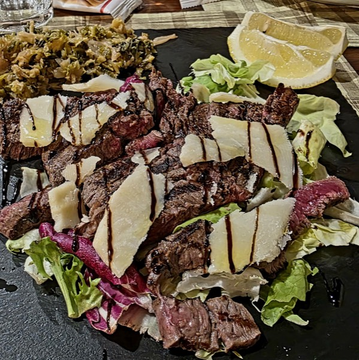
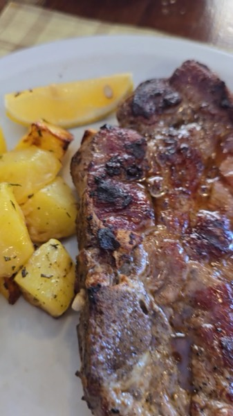
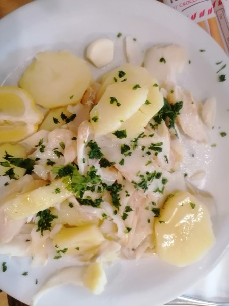

Trattoria tipica ligure a Torriglia
Cucina casalinga ligure-piacentina, pranzo e cena a prezzo fisso o alla carta. Si spende 20–30 € a persona.
- 4,2 · 431 recensioni Google
- Pranzo 12–14 · Cena 19–21
Via Provvidenza 14, Torriglia (GE) · Chiuso il mercoledì
“Porzioni generose, pesto d'aglio molto buono.”
“Funghi fritti da farci il bis e per finire una torta di mele calda deliziosa.”
“Ottima scelta di pietanze dal primo ai dolci, piatti ricchi e gustosi.”
Mangiare ligure a Torriglia, come a casa
Una trattoria dell'entroterra genovese, in Val Trebbia: piatti della tradizione ligure e piacentina, senza fronzoli.
-
Cucina tipica ligure-piacentina
I piatti tradizionali dell'entroterra: antipasti della casa, pasta fresca, secondi di carne.
-
Prezzo fisso o alla carta
A pranzo e a cena. Su Google i clienti indicano una spesa di 20–30 € a persona.
-
Porzioni generose, cucina casalinga
Non lo diciamo noi: lo scrivono i clienti nelle recensioni su Google.
-
Vini e birra della valle
Ampia scelta di vini e la Trebbia beer, prodotta in Val Trebbia.
-
Accessibile a tutti
Ingresso, tavoli e bagno accessibili in sedia a rotelle.
-
Aperti 6 giorni su 7
Pranzo 12–14, cena 19–21. Chiuso il mercoledì.
Cosa si mangia alla Trattoria Viavai
Pasta fresca, funghi, carne alla griglia e dolci. Vuoi sapere cosa c'è oggi? Chiedicelo.





Cosa dice chi ha mangiato da noi
“Siamo stati a pranzo a ferragosto […] Tutto ottimo, dall'antipasto misto che comprendeva frittatine, melanzane grigliate con salsa verde, formaggi, salumi eccellenti, insalata russa casalinga […] Tagliolini freschi al sugo di funghi veramente appetitosi. Funghi fritti da farci il bis e per finire una torta di mele calda deliziosa. Prezzi ragionevoli. Servizio eccellente. Torneremo!”
“Piacevolissima serata in questo caratteristico ristorante chiacchierando col titolare, molto simpatico, gentile e a modo […] Ho mangiato veramente bene, la tagliata era squisita e ben aromatizzata con contorni di verdure cucinate in modo leggero. Lo consiglio vivamente.”
“Una bella sorpresa. Buon cibo, ragazze professionali e simpatiche. Pulito e ordinato. Il cibo è veramente ottimo. Buona qualità prezzo.”
Prenota un tavolo alla Trattoria Viavai
Scegli giorno, orario e quante persone siete: ti si apre WhatsApp con il messaggio già scritto. La prenotazione è confermata quando ti rispondiamo.
Oppure scrivici direttamente

Ristorante a Torriglia, in Via Provvidenza 14
Trattoria Viavai Via Provvidenza 14, 16029 Torriglia (GE)Tel. 010 945 1005
- Cerchi le due porte verdi con l'insegna “Trattoria · Viavai”.
- Parcheggio: DA VERIFICARE (dove parcheggiare e se è gratuito)
- Ingresso accessibile in sedia a rotelle.
Orari
| Lunedì | 12–14 · 19–21 |
|---|---|
| Martedì | 12–14 · 19–21 |
| Mercoledì | Chiuso |
| Giovedì | 12–14 · 19–21 |
| Venerdì | 12–14 · 19–21 |
| Sabato | 12–14 · 19–21 |
| Domenica | 12–14 · 19–21 |
Legno, vino e cucina di casa
Sala in legno, bancone e bottiglie in vista: una trattoria vera dell'entroterra genovese. STORIA DEL LOCALE (da quando, chi c'è in cucina e in sala): DA INSERIRE


Prima di venire a mangiare a Torriglia
Che giorni è aperta la Trattoria Viavai?
Tutti i giorni tranne il mercoledì, a pranzo dalle 12 alle 14 e a cena dalle 19 alle 21.
Quanto si spende in trattoria a Torriglia?
Pranzo e cena sono a prezzo fisso o alla carta. Su Google i clienti indicano una spesa di 20–30 € a persona. Prezzo del menu fisso: DA INSERIRE
Che tipo di cucina proponete?
Cucina tipica dell'entroterra ligure e piacentina: antipasti della casa, pasta fresca come i tagliolini ai funghi, secondi di carne e dolci. Ampia scelta di vini e Trebbia beer della Val Trebbia.
Come si prenota un tavolo?
Dal modulo qui sopra (si apre WhatsApp con il messaggio già pronto) oppure chiamando lo 010 945 1005.
Il ristorante è accessibile in sedia a rotelle?
Sì: ingresso, tavoli e bagno sono accessibili in sedia a rotelle.
Dove si parcheggia?
DA VERIFICARE: parcheggio più vicino e se è gratuito